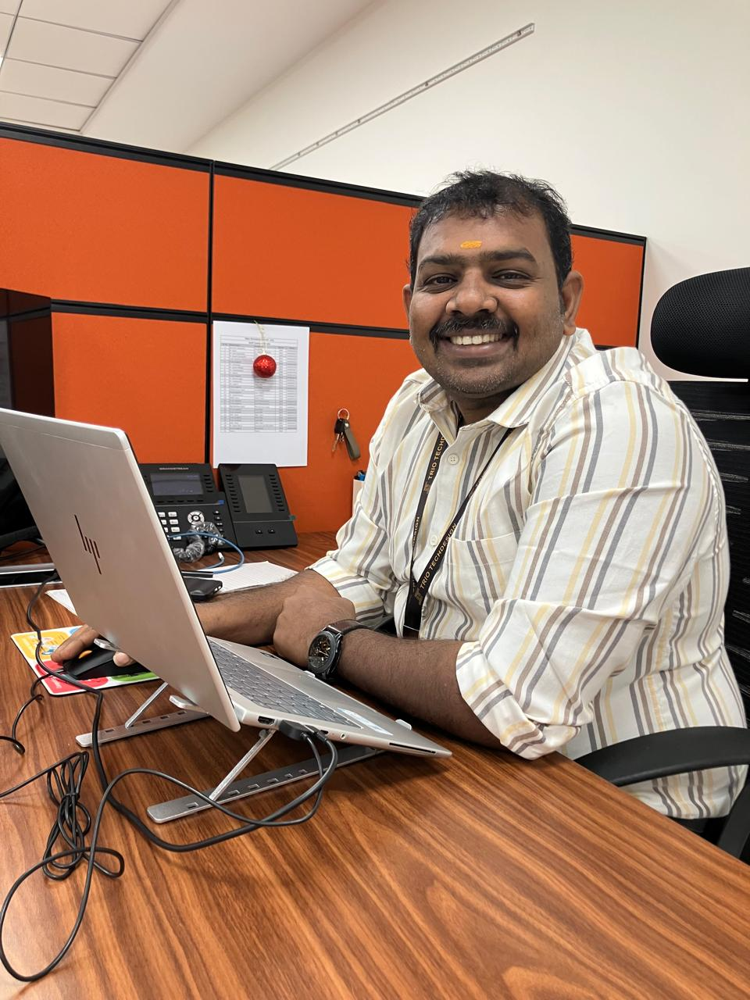

{{ post.title }}
{{ post.excerpt | strip_html | truncate: 140 }}
Read Article →IT Leadership · Digital Transformation · AI Enablement · Governance
Vision-driven IT leader with 16+ years building enterprise infrastructure, service management, cybersecurity governance, AI-enabled knowledge platforms, and business-critical operations across multi-site environments.

Technology leadership grounded in operational discipline, measurable resilience, and a clear line from infrastructure decisions to business outcomes.
16+ years leading enterprise IT operations, infrastructure services, and cross-functional technology teams across 25+ locations.
Delivered AI, LMS, observability, infrastructure, and service-management initiatives that moved teams from reactive support to proactive operations.
Strong focus on cybersecurity, IT governance, risk management, and business continuity built on ITIL-aligned process discipline.
A progression built on owning the floor before owning the strategy.
Handled infrastructure support, field operations, and end-user services across multiple sites, building the hands-on foundation for everything that followed.
Owned site-level IT operations, user support, and enterprise application management, stepping into the first layer of operational responsibility.
Led service delivery and governance for the IT function, managing infrastructure and a growing team while formalising process discipline.
Delivered YantraAI, Moodle LMS, monitoring platform modernization, and DC/DR resilience programs across the organization.
Leading the IT and digital transformation agenda: setting the IT roadmap with business leaders, digitising ERP-linked processes, optimising cloud costs and strengthening cybersecurity and governance.
Measurable improvements delivered through monitoring, process discipline and governance.
Faster average resolution
Centralised monitoring with proactive alerting and automated escalation · CMS Computers
Less infrastructure downtime
Proactive monitoring, structured change management and vendor coordination · TCS
Assets governed
IT asset management across hardware, licensing and audit readiness · CMS Computers
AI knowledge, learning, observability and continuity programmes with measurable operational impact.
AI-powered infrastructure assessment · Independent work
Built an on-premises prototype to analyze IT asset inventories, calculate infrastructure health scores, identify support risks, estimate AMC costs, and interact with infrastructure data using an integrated AI Consultant powered by local LLMs.
Enterprise AI knowledge platform · Trio Techdesign
Designed and deployed an on-premises AI platform integrating local LLMs and Active Directory authentication, with a roadmap toward RAG-based enterprise knowledge management.
Enterprise learning platform · Trio Techdesign
Implemented a centralized LMS supporting employee training, online assessments, learning governance, and structured skill development.
Observability & operations · Trio Techdesign
Designed and implemented monitoring and observability tooling to improve infrastructure visibility, alerting discipline, and service availability.
Business continuity & resilience · Trio Techdesign
Led infrastructure modernization focused on virtualization, storage optimization, backup governance, and disaster recovery readiness.
New articles every few days on the practical side of running and transforming enterprise IT.
{{ post.excerpt | strip_html | truncate: 140 }}
Read Article →Scam alerts, safe habits, and a family cartoon series on real-life scams. New episodes every Saturday.

 {% endfor %}
▶ Subscribe on YouTube
{% endfor %}
▶ Subscribe on YouTube
Formal certification paired with hands-on leadership across the full technology stack.